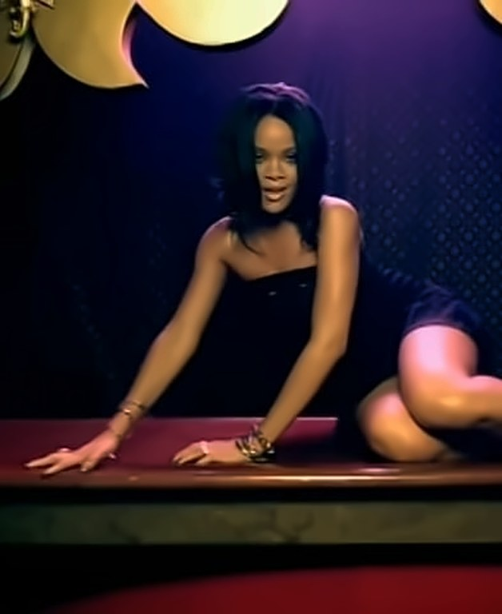

That chant on Thriller? It started in Cameroon
The best-selling album of all time ends its first song with a chant the whole world knows. It wasn't Michael Jackson's. Flavor Roots Issue 01 traces it back to a B-side recorded for a football tournament in 1972.

Play the first track on Thriller. “Wanna Be Startin’ Somethin’” builds for nearly six minutes and then, near the end, drops into a call-and-response chant that stadiums have been singing back for four decades. Most people assume Michael Jackson wrote it. He didn't. To find where it comes from, you have to go back ten years earlier, to Douala, Cameroon.
The source · 1972A B-side for a football tournament
Manu Dibango was born in Douala in December 1933 and became one of Africa's great saxophonists, moving between jazz, soul and the music of home. In 1972 Cameroon hosted the Africa Cup of Nations, and Dibango was asked to record an anthem for the tournament. On the B-side, almost as an afterthought, he put a track called “Soul Makossa”.
Makossa is the urban dance music of Douala. Dibango built the song on that rhythm, added a heavy dose of American soul and funk, and topped it with a short chanted hook. Then the tournament ended, and the record should have disappeared with it.
The journey · 1973From Douala to New York
Instead, a copy made its way to New York. Late in 1972, the DJ David Mancuso found the single in a small Jamaican record shop in Brooklyn and started playing it at The Loft, his legendary invitation-only parties in Manhattan. The dancers went wild. Other DJs went looking for copies, and the DJ Frankie Crocker started playing it on the New York radio station WBLS.
There weren't nearly enough copies to go round. Cover versions rushed out to meet demand, including one by the Nigerian drummer Babatunde Olatunji, until Atlantic Records licensed Dibango's original for the US. In 1973 “Soul Makossa” climbed to No. 35 on the Billboard Hot 100, with very little help from mainstream radio, and earned Dibango two Grammy nominations.
It's often described as one of the very first disco records, and its success helped convince American labels to start promoting music directly to club DJs. In a real sense, a B-side from Cameroon helped invent the way dance music gets broken.
The hit · 1982The borrowed chant
Nearly a decade later, Michael Jackson and Quincy Jones were making Thriller. Dibango's chant, slightly reworked, became the climax of the album's opening track. Nobody asked Dibango, and he wasn't credited.
When he found out, he took action. Jackson admitted he had borrowed the hook, and the matter was settled out of court. Thriller went on to become the best-selling album in history, carrying a piece of Douala to every corner of the planet.
The creditWho gets paid?
The story didn't end there. In 2007 Rihanna released “Don't Stop the Music”, which sampled Jackson's version of the chant. In 2008 a French judge ordered Universal Music to credit Dibango on future French releases of the song, and Dibango dropped that earlier action, giving up his right to further damages.
In 2009 he went back to court in Paris, suing both Rihanna and Jackson. The judge ruled the claim inadmissible, because of the agreement he had already accepted. It was a reminder of how hard it can be for an African original to get paid when its music travels the world through other people's hits.

The legacyA chant that won't stop
“Soul Makossa” has kept travelling. Its sounds have been sampled across hip-hop, from A Tribe Called Quest's “Rhythm (Devoted to the Art of Moving Butts)” to Will Smith's “Gettin' Jiggy Wit It” and Jay-Z's “Face Off”.
Manu Dibango died in a Paris hospital on 24 March 2020, aged 86, after contracting Covid-19. He left behind more than half a century of music. But if you only know one thing he made, you already know it. You've been singing it every time Thriller comes on. Now you know where it comes from.
Sources
- Mixmag: How Soul Makossa made Manu Dibango a club and pop legend
- Rolling Stone: Manu Dibango dead at 86 (Mar 2020)
- 909 Originals: Soul Makossa (1972)
- CBC: Manu Dibango dies after Covid-19 hospitalisation (Mar 2020)
- Best Classic Bands: Manu Dibango obituary
- FolkWorld: Manu Dibango
- Ethan Hein: The Makossa diaspora